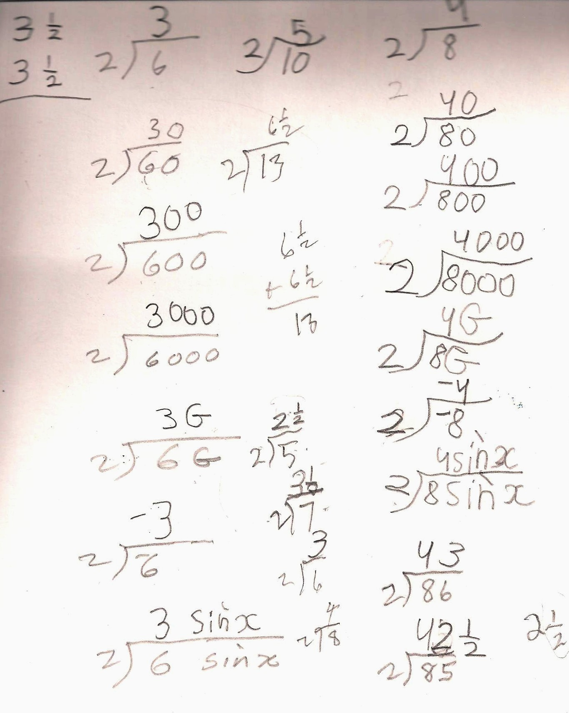
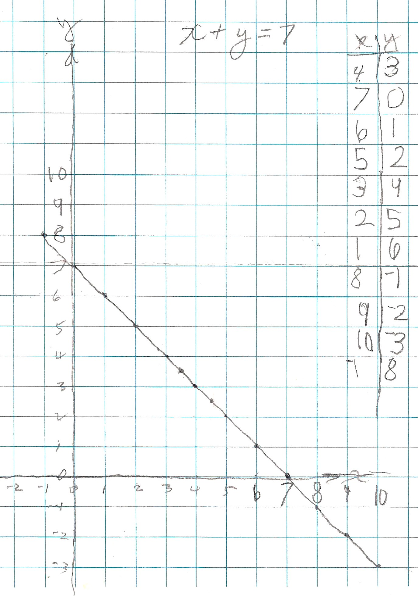

And Anushka, age 6, knew neither division nor graphs !
PATTERNS in division..
Her brother had been coming for about 2 months. This was Anushka's first session with Don. She is 6, going on 7 soon. He started by asking her if she knew about division. She said no (but Don knew she could do it quickly, he could tell). So he started with 'how many 2's make 6?'; Anushka said 3 and Don had her put the 3 on top of the box(?). Then he gave her 'how many 2's make 6 tens or 60' and she gave 30 right away. Then Don wrote the other problems, through 6 sin x, and suggested she do those. Don left her to work with someone else.

When Don came back to Anushka, he saw that she had finished the rest correctly. He then asked her to make up some problems like these. Again he left her on her own. Returning, she had started the column with how many 2's make 8 and did very well even when Don gave her how many 2's make 86 to get 43. Then with how many 2's make 85, she wasn't sure about how many 2's make 5. At that point Don got out 5 cookies (3"x5" blank cards) and asked Anushka to share the 5 cookies between 2 people (see chapter 2 in Don's books), She very quickly realized each person would get 2 and 1/2 cookies. So 5 divided by 2 is 2 1/2. She wrote how many 2's make 85 would be 42 1/2 and how many 2's make 7, she tried 6 1/2, but 2x6 1/2 = 6 1/2 + 6 1/2 = 13, then came to 3 1/2.
PATTERNS in graphs..
Then Don had Anushka graph x + y = 7 because she would soon be 7. He started with 'give me two numbers that add to 7'. 4 + 3 = 7, she said. Don made a table for Anushka to keep track of the pairs of numbers that made the sentence true. After she plotted the first 4 pairs, she started to draw a line connecting these and realized she was getting a straight line. Before long she was plotting 8 and -1 (8 and a take away 1 = 7), (10,-3) and (-1, 8).

He left Anushka with the problem of what were the 2 numbers for the point on the graph that lies between 3 an 4 on the x-axis (he plotted that point on the graph).
Fine work Anushka!
After the session, Anushka showed her Mom what she had done, and Mom said oh! trigonometry! Her Mom then told Don that she and her husband talked about what it would have been like if they had Don as a teacher. At her brother's next session, their Mom told Don that Anushka said she wanted to come everyday to work with Don! Don feels very, very fortunate to be able to work with his students like this.
Don still finds textbooks that do not write negative 1 with the raised sign -1 like he has been doing for about 40 years. He sees things like 3 - (-1) in books , instead of 3 - -1 which is much simpler. Notice that Anushka picked this up without Don saying anything. Even calculators have a special key for negative 1 rather than minus 1 . When graphing, Don makes sure there are spaces to the left and below the axes in order for his students to get into negative numbers early.
Johann, age 4, graphs x+y=5 on their kitchen floor!
Jan. 11, 2003 When Johann was 4, his Mom bought Don's books Calculus By and For Young People (ages 7, yes 7 and up), Calculus By and For Young People-Worksheets , and his 2 videotapes. Johann graphed x+y=5 on the kitchen floor in his house. His Mom used masking tape for the x- and y-axes, he walked to the points (1,4), (2,3), (3,2), (4,1), and (5,0), putting a piece of masking tape there, and then a piece of yarn to show the connection of the points .
On August 24, 2003 Johann and Mom came to Champaign to study with Don for a week! Click here see what they did both before and after they came. Afterwards, everyone was pleased with the work Johann had done with Don.
Daly, age 8, (on Oct. 16, 2002) works on graphing x+y=8 where he got into fractions and negative numbers, square numbers and quadratic equations, multiplying mixed numbers, fractions <=> decimals <=> percents
See sample problems for Chapter 6